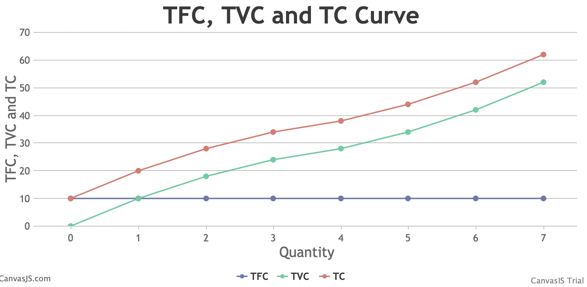

Chapters:-
1. Basic concepts of economics and allocations of resources
2.1 Market and revenue curves
2.2 Cost curves
2.3 Theory of price and output determination
2.4 Theory of factor pricing
3.1 Banking system and monetary policy
3.2 Government Finance
3.3 International trade
4.1 Poverty, inequality and unemployment and human resources
5.1 Foreign trade of Nepal and foreign employment
5.2 Development planning in Nepal
5.3 Sustainable development goals of UN and Nepal
6. Basic mathematics
Basic concept of Cost
Cost
The sum of the price paid to the inputs like rent, interest, wages, and other by producer to produce goods and services is known as cost
1. Money cost
The value of payment made in terms of money to the inputs used in the production in the form of rent, wages, salaries, allowences, profit, interest and price of raw materials is known as money cost.
2. Real cost
Real cost is a sacrifice made by the producer while producing goods and services. For example, Discomfort, pain are some examples of real cost.
3. Accounting cost
Cost which are necessary for accounting purposes is known as accounting cost.
4. Explict cost
The monetary payment of cash expenditure which a firm makes to those inputs which are not owned by the firm itself are called explict cost.
5. Implict cost
Implict cost ia the contribution made by the producer and his/her family members but not paid to them in monetary terms.
6. Economic cost
Economic cost is the aggregate of explict cost and implict cost.
Economic cost = Explict cost + Implict cost
Short-Run cost
Short-run is a time interval, which is too short to change all factor of production. It means all factor of production are not variable in short-run. Some factors are fixed and some are variable. Cost incurred on both fixed and variable factor of production in the short-run is known as short run cost.
Fixed cost
The cost incurred on the fixed factor used in the process of production is known as fixed cost. In other words, fixed cost are those cost which in total do not change with any changes in output.
Variable cost
Variable cost is the cost incurred on the purchase of variable factors used in the production. In other words, variable cost are those cost which vary directly with production.
Total cost
The overall amount of cost incurred by the producer while producing various units of goods and services in given time period is called total cost.
i.e. TC = TVC + TVC
Marginal cost
Marginal cost is the additional cost on total added by the production of one more unit of output.
Marginal cost is defined as the change in total cost resulting from one unit change in the level of output produced.
Mathematically,
MCn = TCn - TCn-1
Average cost
Average cost is per unit cost of production. Average cost, at each level of output is calculated by dividing total cost by the corresponding level of output/production.
Mathematically,
AC =
Short-Run Total cost
1. Total Fixed cost (TFC)
The total amount of cost incurred on the fixed factor in short-run in the production process is known as total fixed cost. The total fixed cost remains constant whatever be the level of output, i.e. zero or more.
2. Total Variable cost (TVC)
The total amount of cost incurred on the variable factors in short-run is known as total variable cost. TVC remains at zero at zero level of output and it increases with increase in output.
3. Total cost (TC)
Total cost is self-defining. It is the sum of total fixed cost and total variable cost at each level of output or production.
Therefore,
TC = TFC + TVC
| Quantity | TFC | TVC | TC |
|---|---|---|---|
| 0 | 10 | 0 | 10 |
| 1 | 10 | 10 | 20 |
| 2 | 10 | 18 | 28 |
| 3 | 10 | 24 | 34 |
| 4 | 10 | 28 | 38 |
| 5 | 10 | 34 | 44 |
| 6 | 10 | 42 | 52 |
| 7 | 10 | 52 | 62 |
Diagram
Nature
1. Average Fixed cost
Mathematically,
AFC =
2. Average Variable cost
3. Average cost